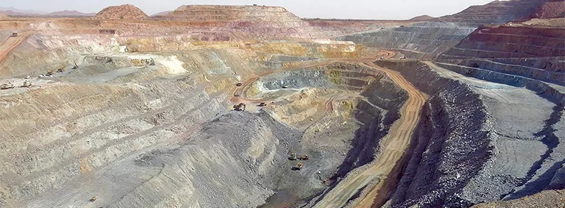

Mineral exploration experience across orogenic gold, VMS, and structurally controlled mineral systems.

Contribution to the discovery and advancement of the Galat Sufur South (GSS) orogenic gold system within the Nubian Shield of northeastern Sudan.

Technical involvement in the Bisha volcanogenic massive sulphide (VMS) district from exploration drilling through geological modelling support.

Structural mapping and geological interpretation within the Asmara Belt targeting porphyry-style mineralisation systems.

Technical assessment of artisanal and small-scale gold mining (ASGM) operations focused on geological controls, mineralisation style, and field-scale evaluation.
Ubuntu Geoscience supports exploration teams, investors, and mining companies requiring field-grounded geological interpretation and integrated exploration workflows.